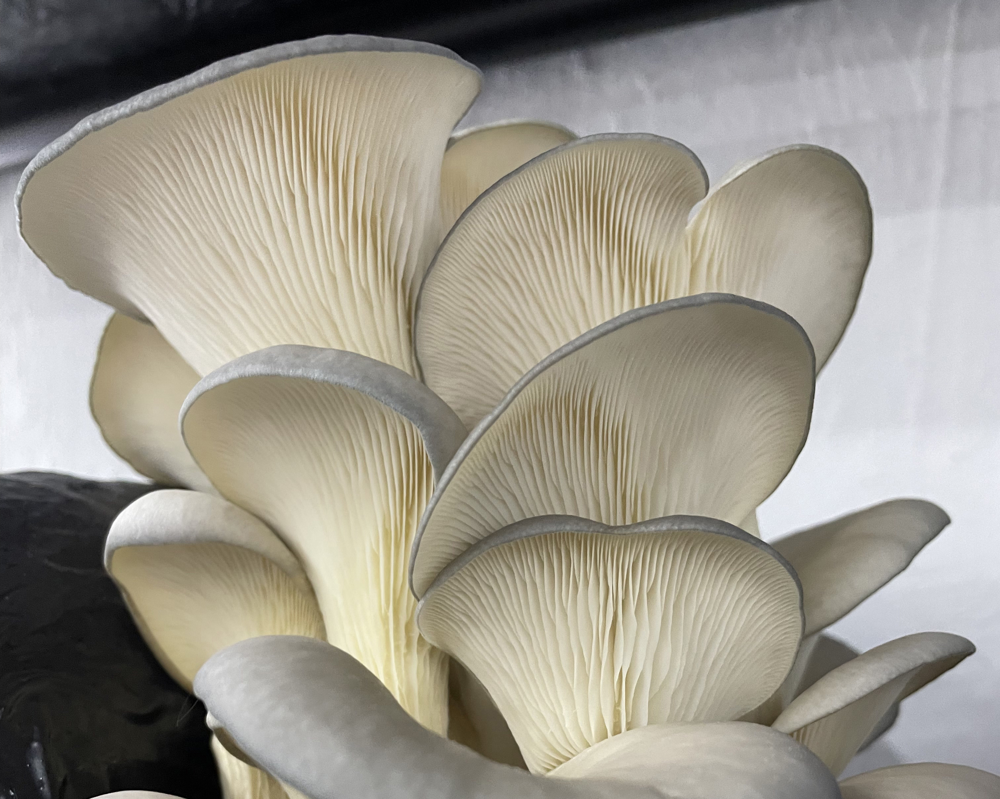
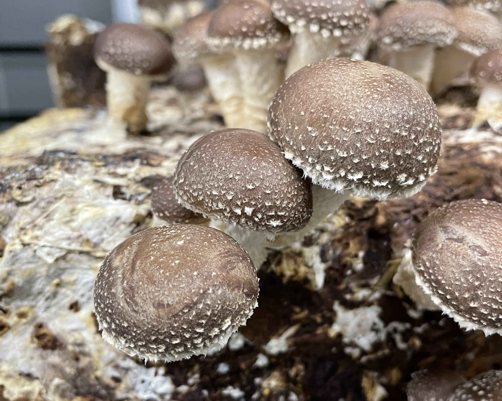
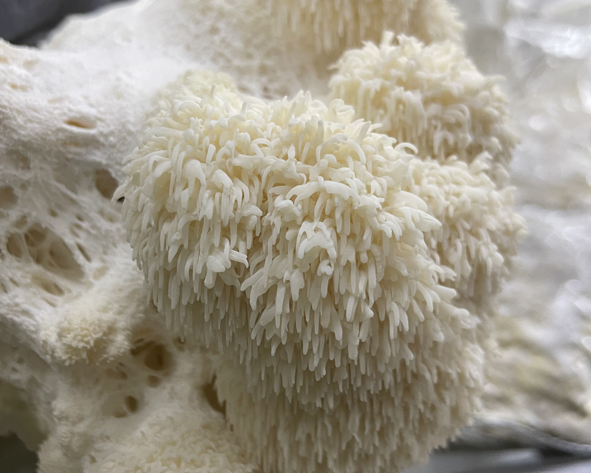

Gírgola (Pleurotus ostreatus)

Aquesta espècie també s’anomena “Orellana”, “Petxina”, “Xampinyó ostra”, “Bolet d´orella”, “Belarri landu”,... En anglès se'n diu “Oyster mushroom” i en francès “leurote en huître”.
És una de les espècies més cultivades i consumides en el món culinàri. De carn espessa i blanca, desprèn una olor forta, intensa, i de sabor molt agradable. Bolet perfecte per fer-lo saltejat.
La Gírgola creix en forma de ram, es a dir d’un peu molt curt hi surten varies ramificacions que conformen finalment barrets independents en forma de pètal. El barret és de tonalitats grises i les làmines ben definides, son blanques i compactes. La grandària pot variar des dels 4 cm fins als 25cm.
Els bolets del gènere Pleurotus són apreciades des de fa segles pel seu valor nutritiu i el seu deliciós sabor.
Xiitake (Lentinula edodes)

El seu nom comú deriva de la paraula japonesa ‘Shii’ que indica una varietat de d’arbre molt pròxim al castanyer (Castanopsis cuspidata), i de la paraula ‘take’ que significa ‘fong’.
Aquest fong del bosc és conegut com un dels bolets comestibles més consumit del món. El seu ús gastronòmic és molt extens i el seu contingut en substàncies bioactives fan que també sigui de gran interès.
El Xiitake, és un excel·lent i deliciós comestible, molt benvolgut a la Xina i el Japó. A més, les seves qualitats es valoren des de temps immemorials en les cultures orientals. Des d'un punt de vista nutricional, té provitamina D, àcids grassos insaturats i gran quantitat de polisacàrids, especialment el lentinan o lentinano.
Aquest bolet té barrets de 5 a 25 cm de diàmetre de vores irregulars. Sobretot, les seves làmines són blanques amb tons vermellosos que també s'enfosqueixen amb l'edat. El peu és fibrós i centrat.
Bolet amb un sabor intens a fusta, terra i lleugers tocs fumats, és carnós i umami.
Ideal per utilitzar en brous, sopes, saltats o guisats.
Bolet Carner (Hericium erinaceus)

Bolet també anomenat Melena de León ,’Yamabushitake’, ‘Hou Tou Gu’ (bolet de cap de mico) o “hongo erizo”. Cal destacar el seu atractiu visual pel seu imponent cos fructífer globular amb unes espines blanques penjants que fan l'efecte d'una cascada congelada o d'una majestuosa cabellera de lleó (d'aquí el seu curiós nom popular).
El bolet carner, conté centenars de components bioactius o biomolècules actives, que s'estudien pel seu paper en la microbiota intestinal. Actualment gaudeix d'una creixent popularitat i és objecte de contínua recerca científica en diverses àrees.
De color blanc o groc-marró pàl·lid que s'enfosqueix amb l'edat, tot el cos fructífer pot tenir fins a 30 cm de diàmetre, encara que el més típic és de 15 a 20 cm. Les espines de l’Hericium erinaceus tenen puntes punxegudes i varien d'1 a 5 cm de llarg.
A més de ser molt apreciat en la cuina per la seva carn blanca d’olor afruitada, se li atribueixen propietats medicinals, sent molt utilitzada en la medicina tradicional xinesa.